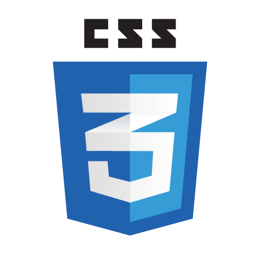

Hi,I'm Ashish Karakoti
Full Stack Developer Competitive Programmer Tech EnthusiastOverview:
An enthusiastic and motivated Student in the field of Computer Science with a keen interest in Full Stack Development. I love to build software that makes an impact on my organization and the world. I enjoy solving complex problem and taking on challenging tasks. I am currently learning Data structure and algorithm for my interest in problem solving. I am a quick learner and open to working in any technology . Detailed Oriented Consistency and Hard work are some of my top qualities . I believe consistent practice brings excellence.
Skills:

